GalioVotre pool · maîtrise 50 k
Comble la frontline et les dégâts magiques qui manquent.
RIFU est l'app compagnon League of Legends qui vous suit de la sélection au bilan : draft dans votre pool, scouting des dix joueurs, overlays en jeu et note de partie sur 100. Tout est gratuit.
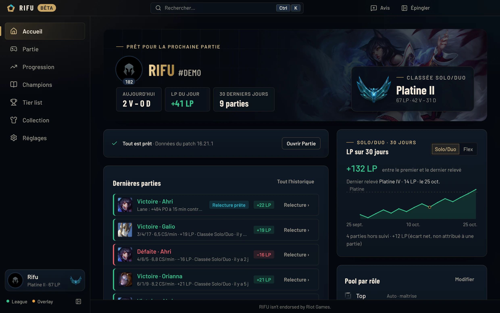
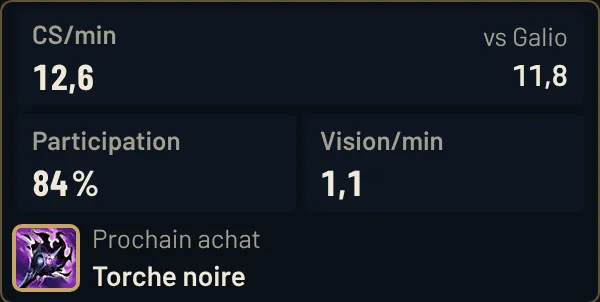
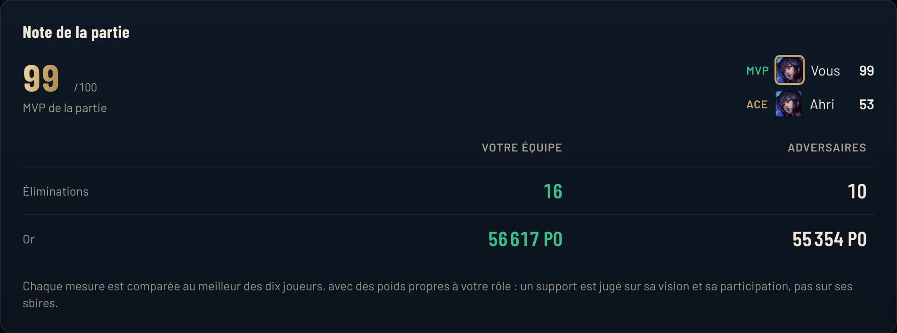
Sélection des champions
RIFU lit la draft en direct, repère ce qui manque à votre compo et vous propose trois champions de votre pool, chacun avec sa raison.
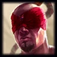
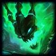
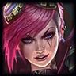
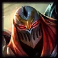
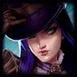
Démonstration illustrative. Dans l'app, l'analyse s'appuie sur les fiches des 173 champions, vos parties et les statistiques du patch.
Écran de chargement
Un écran plein par-dessus le chargement de League. Rang, forme, groupes : vous savez à qui vous avez affaire avant la première seconde.
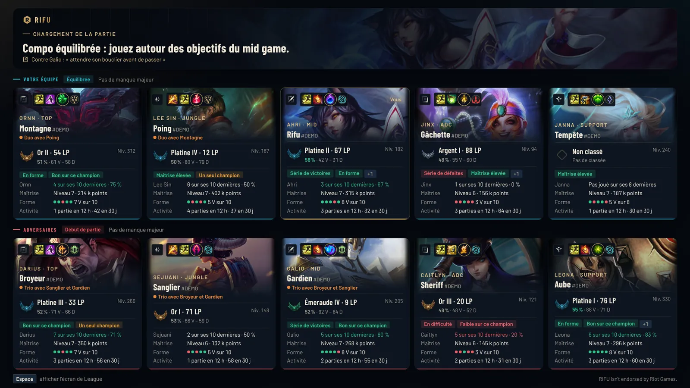
En partie
Un HUD déplaçable, le panneau Ctrl + X et les écarts d'équipement au TAB. Légers, et jamais devant votre jeu.
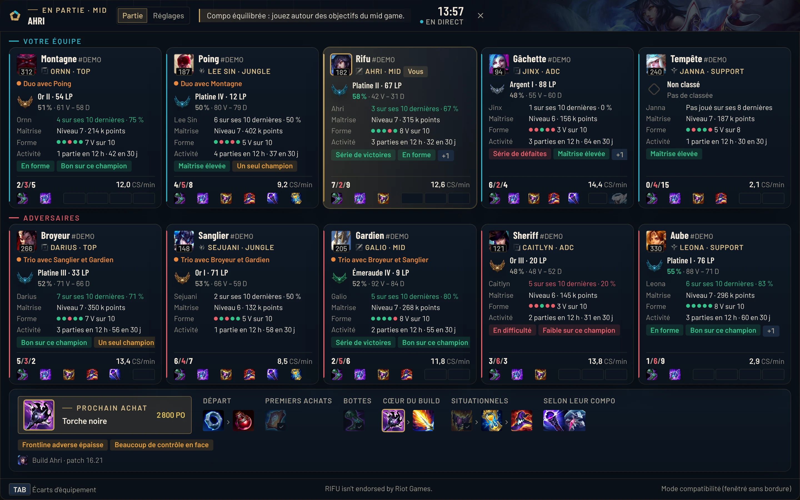
Après la partie
Chaque mesure est comparée au meilleur des dix joueurs, avec des poids propres à votre rôle. Un support est jugé sur sa vision, pas sur ses sbires.
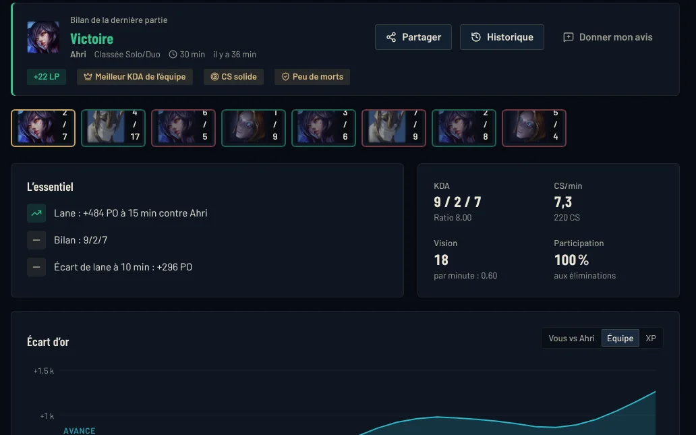
Tout le reste
Ce qu'il fallait chercher dans plusieurs outils, dont un payant, RIFU le réunit au même endroit.
Tiers S+ à D calculés par RIFU sur les parties classées EUW Émeraude et plus : victoires, choix, bannissements.
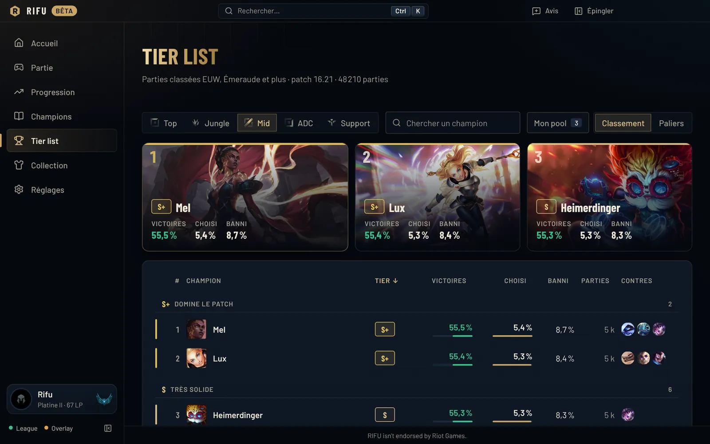
Page de runes, sorts sur la bonne touche, ordre des compétences et set d'objets dans la boutique. Vos propres sets sont conservés.
Courbe des LP sur 30 jours, même pour les parties jouées RIFU fermé.
Rangs, historique, tags et champions de n'importe quel joueur EUW.
Build, runes, compétences et matchups de chaque champion, hors partie.
Un objectif choisi par vous (CS, morts, vision), suivi partie après partie.
Testez une compo hors partie et voyez ce que votre pool ne couvre pas.
Une note contre chaque adversaire, rappelée à la draft et au chargement suivants.
Alerte sonore, et acceptation automatique si vous l'activez.
Comparatif
Le meilleur de Porofessor et de DPM, réuni dans une seule app gratuite.
| Fonction | RIFUApp Windows | PorofessorApp Windows | DPMApp Windows |
|---|---|---|---|
| Prix de l'application | Gratuite | Gratuite avec pub | Premium, dès 3,33 €/mois |
| Conseils de draft selon les manques de votre compo, dans votre pool | Inclus | Non | Premium |
| Import des runes, des sorts et du build | Inclus | Inclus | Premium |
| Tags des joueurs au chargement (séries, one-trick…) | Inclus | Inclus | Non |
| Écart d'or et build conseillé en partie | Inclus | Inclus | Premium |
| Suivi des LP | Inclus | Non | Premium |
| Analyse détaillée après la partie | Inclus | Inclus | Premium |
D'après les offres publiques de Porofessor et de l'application Windows de DPM (réservée à l'abonnement Premium, 4,99 €/mois ou 39,99 €/an), relevées en octobre 2026 ; elles peuvent avoir évolué depuis. Porofessor et DPM sont des marques de leurs propriétaires respectifs. RIFU n'est affilié à aucun d'eux.
Fair-play
RIFU ne lit jamais la mémoire du jeu et ne modifie aucun fichier de League.
Jamais « jouez X ». Les suggestions viennent de votre pool, pas d'une méta unique.
Aucune estimation de MMR, aucun joueur masqué identifié, aucun suivi des sorts adverses.
Historique, notes et réglages restent sur votre PC. Vos retours ne partent qu'avec votre accord.
Installer
RIFU-Setup-….exe, sur cette page ou sur la page des versions.Questions
Oui, entièrement. À terme, RIFU sera financé par une publicité discrète, uniquement dans la fenêtre RIFU et hors partie : jamais en sélection, au chargement, en jeu ni dans un overlay.
C'est son ambition. RIFU réunit dans une seule app le scouting de l'écran de chargement, l'assistant de draft, les overlays en jeu, le bilan de partie et le suivi des LP, sans abonnement. Son point fort : il explique ce qui manque à votre compo et propose des champions de votre propre pool.
RIFU n'utilise que les interfaces que Riot met à disposition des applications tierces : l'API Riot, l'API du client League et les données de la partie en cours. Il ne lit jamais la mémoire du jeu, ne modifie aucun fichier de League et ne joue jamais à votre place.
Il suit les règles de Riot pour les applications tierces : plusieurs options plutôt qu'un choix imposé, pas d'estimation de MMR, pas d'identification des joueurs masqués en sélection, pas d'information absente du client qui donnerait un avantage.
La bêta est fermée et se fait sur invitation, avec un code personnel par joueur. Rejoignez le Discord RIFU pour demander une place.
Chaque mesure de la partie (éliminations, participation, dégâts, or, sbires, vision, objectifs) est rapportée au meilleur des dix joueurs, puis pondérée selon votre rôle. Le meilleur de l'équipe gagnante est MVP, celui de l'équipe perdante est ACE. Ce n'est ni un rang ni une estimation de MMR.
Non. Ils ne prennent jamais le focus du jeu, et vous les ouvrez ou les masquez à la demande. Pendant la bêta, ils demandent le mode fenêtré sans bordure ; le plein écran viendra avec la version signée.
Non. RIFU est une application autonome : elle n'a pas besoin du client Overwolf.
Pendant la bêta, l'installeur n'est pas encore signé par un certificat, donc Windows SmartScreen le signale. La signature est prévue pour la sortie publique. En attendant, téléchargez RIFU uniquement depuis ce site ou la page officielle des versions.
La Faille de l'invocateur : normales, classées, Coop contre IA et parties personnalisées. En ARAM et en Arena, RIFU ne donne pas encore de conseil de draft. Serveur EUW, sur Windows 10 et 11.
Le minimum pour afficher les profils et l'écran de chargement. Tout le reste reste sur votre PC, et les retours ne partent que si vous l'activez. Le détail est dans la politique de confidentialité.
Bêta fermée
Gratuit, pour Windows. Rejoignez le Discord pour recevoir votre code bêta.